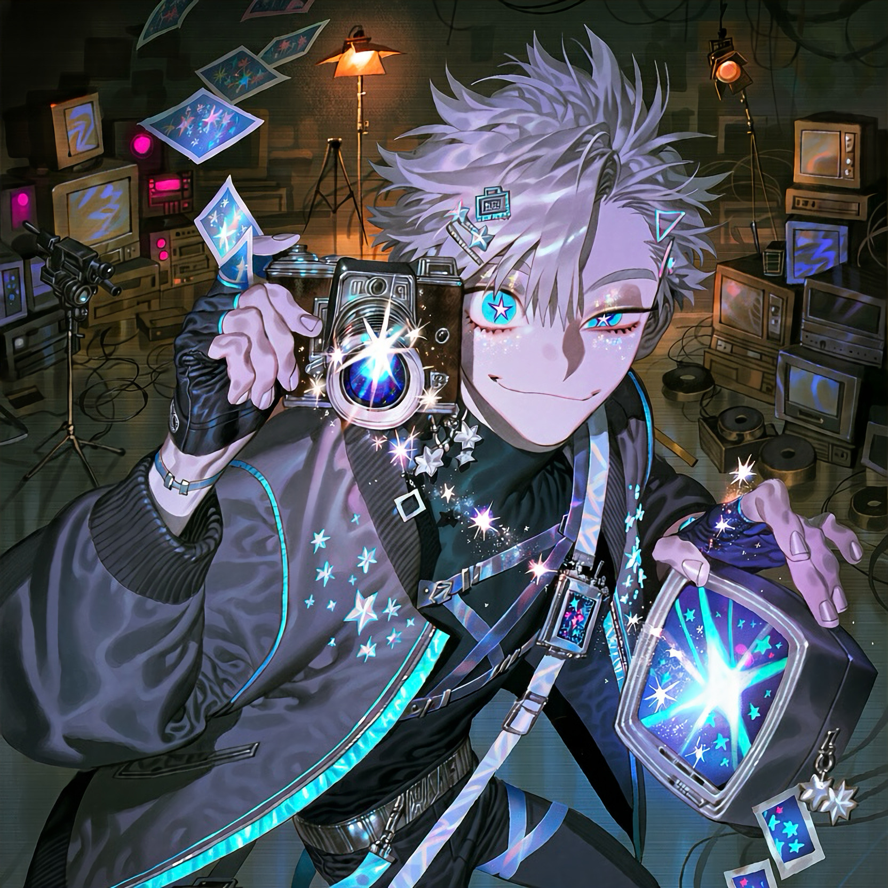

CHARACTER RECORD / 039STATUS: AVAILABLE

✦IMAGE
NOT FOUND
NOT FOUND
ルーベル
✦ WITH OUTFIT服装込み
PROMPT DATATXT / 039
masterpiece, best quality, ultra detailed, intricate character design, cinematic lighting,
1.5::boy, adult male, mysterious supernatural cameraman, slender athletic build, pale cool-toned skin, eccentric and charismatic presence::,
1.8::distinct five-pointed star-shaped pupils, clearly visible star-shaped pupils in both eyes, luminous cyan and electric-blue irises, sparkling eyes, tiny glittering highlights, tiny stars reflected across the eyes, magical shimmering gaze, subtle glowing particles around the eyelids::,
1.3::thin well-defined eyebrows, sharp facial features, slightly sleepy eyelids, crooked playful smile, short silver-white hair, choppy cropped layers, asymmetrical fringe, dark navy underlayer, small holographic hair clips::,
1.4::retro-futuristic streetwear, oversized charcoal bomber jacket with electric-blue piping, asymmetrical black high-neck shirt, layered utility harness, fitted dark trousers, metallic belt, fingerless gloves, chunky black sneakers, translucent blue straps, silver camera charms, CRT-inspired geometric accessories, reflective fabric panels::,
1.5::vintage film camera hanging from a crossbody strap, tiny star-shaped charms, miniature floating screen ornaments, subtle pixel patterns, analog signal motifs, holographic star embroidery::,
1.3::charcoal black, silver-white, electric cyan, vivid cobalt blue accents, retro television aesthetics, analog photography motifs, glossy plastic and brushed metal textures::,
PROMPT NOT ENTERED